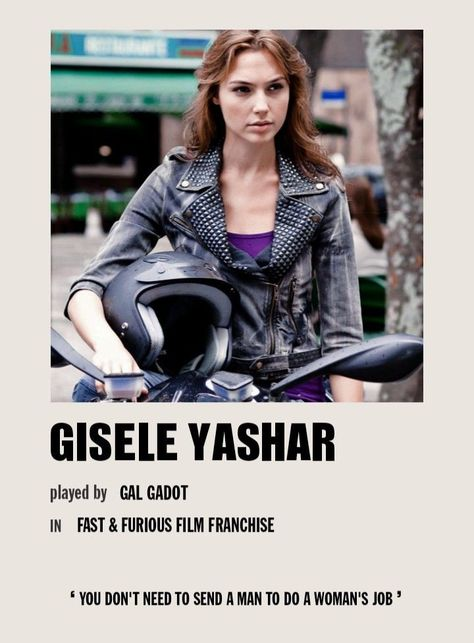

- 


The Fast and the Furious (também conhecido como Velozes e Furiosos) é uma franquia de mídia e Universo Compartilhado centrado em uma série de filmes de ação que estão amplamente preocupados com corridas de rua, assaltos, espiões e família. A franquia também inclui curtas-metragens, uma série de televisão, videogames e atrações de parques temáticos. É distribuído pela Universal Pictures.